← Index · ← Previous · Next →
Authors: Mayank Raj, Lianghao Cao, Andrew Stuart, Kaushik Bhattacharya
Type: both · Category: disordered systems and neural networks · PDF: https://arxiv.org/pdf/2605.14179v1
Analysis basis: full PDF text, analyzed in chunks
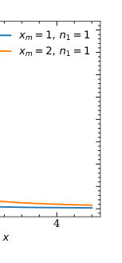
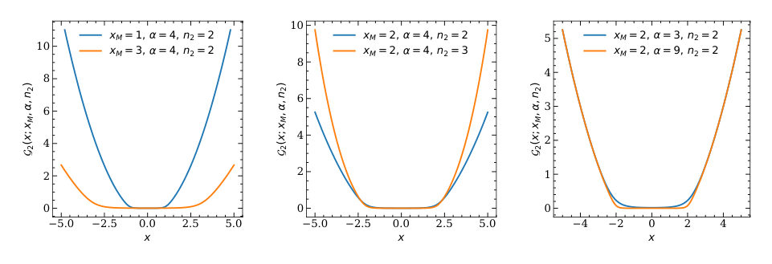
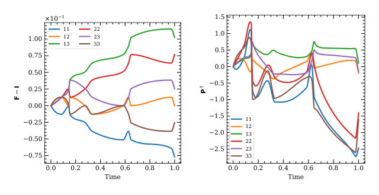
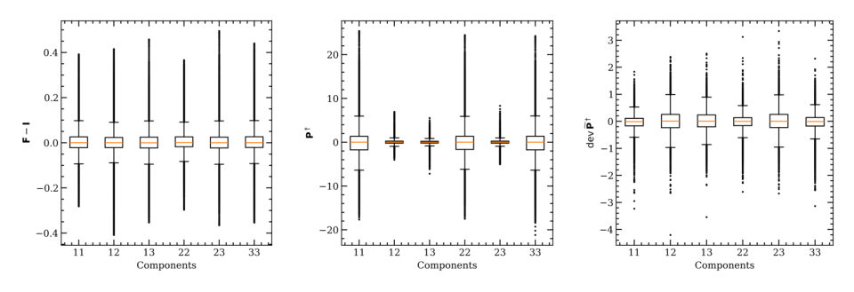
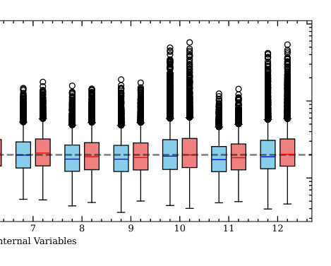
Summary. This paper introduces a new neural network architecture designed to learn material constitutive laws while strictly adhering to thermodynamic and mathematical stability requirements. It successfully predicts the mechanical response of magnesium with high accuracy and provides a theoretical proof that the learned internal variables are unique up to a linear transform.
Why it may be interesting. not directly relevant
Main problem. Developing a neural network framework to learn history-dependent constitutive laws that satisfy fundamental physical constraints like the second law of thermodynamics, polyconvexity, and material stability, while addressing the identifiability of learned internal variables.
Main result. The authors present a physically consistent framework that achieves 2% relative error in predicting the response of magnesium and theoretically prove that learned internal variables are unique up to a linear transformation.
Method. The framework uses Input Convex Neural Networks (ICNN) to approximate energy and dissipation potentials, incorporating growth functions to enforce stability and a hydrostatic-deviatoric decomposition to improve accuracy.
Model / system. The system is a polycrystalline magnesium (Mg) unit cell modeled via Taylor-averaged response, exhibiting viscoplastic, finite-deformation, and non-Markovian (history-dependent) behavior.
Key observables. Deformation gradient tensor (F) and first Piola-Kirchhoff stress tensor (P).
Important parameters / regimes. Number of internal variables (n=6 found to be optimal), growth/singularity parameters (kappa, Xi), and transition rate (alpha).
Assumptions / limitations. The material response is assumed to be viscoplastic; the converse theorem for identifiability requires specific reachability conditions (Assumption 4.9) and sufficient dimensionality (m >= n).
Figures summary. Figures show time-series of stress and strain, distribution of stress components, error analysis regarding the number of internal variables and energy decomposition, and a visual proof of internal variable identifiability via linear regression.
Paper structure. The paper progresses from defining the need for physically consistent models to introducing a Markovian framework with internal variables, followed by detailing the neural network architecture and training, demonstrating application to magnesium, and concluding with mathematical proofs of identifiability.
The identification of constitutive laws is ubiquitous in engineering: in modeling of materials where experimental data are fitted to mathematical models or learning surrogate models to beat the FE\textsuperscript{2} computational cost of multiscale numerical simulations. However, these models of constitutive laws, unless equipped with a potential formulation, are not necessarily consistent with (a) the second law of thermodynamics; (b) stability of the material under extreme applied strain; and (c) the mathematical theory underpinning the existence of solutions of the governing equation. In this work, we present a causal and energetic formulation, consistent with aforementioned properties, of learning a history-dependent constitutive law. This characterization of the class of internal variables sheds light on the equivalence class of equivalent surrogate models for the constitutive law. We show that the internal variables that are learned from the data are unique up to a linear transform. The framework is deployed to learn the Taylor-averaged response of a polycrystalline magnesium unit cell. We achieve 2\% relative error in the prediction of the Taylor-averaged response.
Authors: Saleh Baqer, Hamid Said
Type: theory · Category: other · PDF: https://arxiv.org/pdf/2605.14024v1
Analysis basis: full PDF text, analyzed in chunks
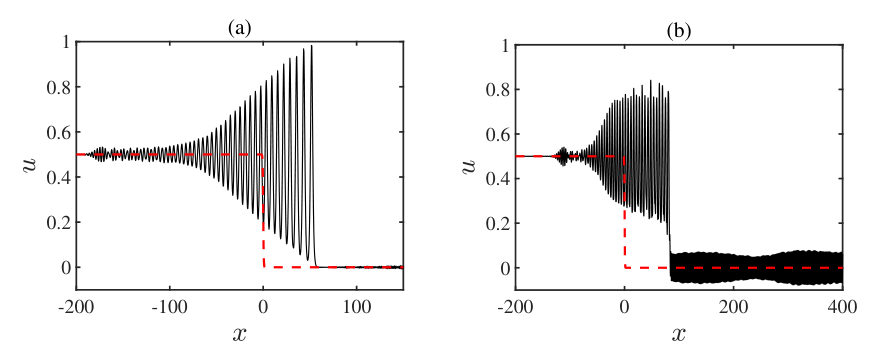
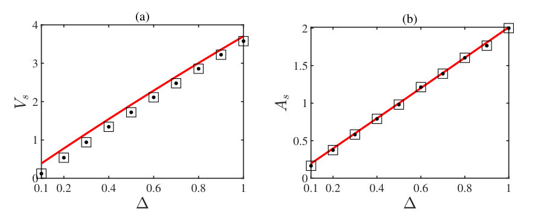
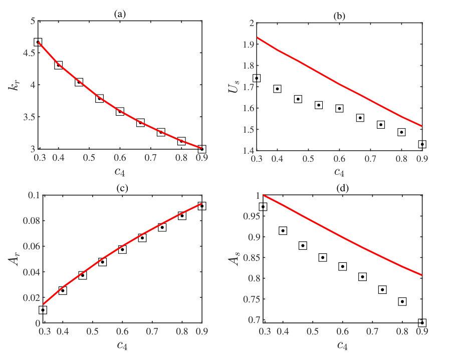
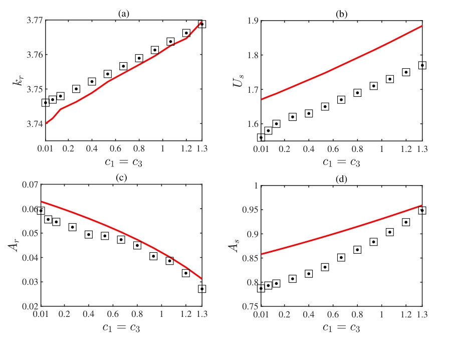
Summary. This paper develops a simplified variational method to find solitary wave solutions for the extended KdV equation. These solutions are used to accurately predict the behavior of complex dispersive shock waves, such as resonant radiation and undular bores, in shallow water systems.
Why it may be interesting. not directly relevant
Main problem. The paper seeks to derive simpler, more practical approximate solitary wave solutions for the conservative-extended KdV (eKdV) equation to better describe complex dispersive hydrodynamic phenomena like undular bores and resonant dispersive shock waves.
Main result. The authors successfully derived variational solitary wave solutions that are simpler than previous asymptotic methods and demonstrated excellent agreement with numerical simulations for both classical and non-classical (resonant) dispersive shock wave regimes.
Method. A variational approach based on the method of averaged Lagrangians was used to construct the solutions, which were then validated against direct numerical simulations using Fourier spectral and Runge-Kutta methods.
Model / system. The study focuses on the conservative-extended KdV (eKdV) equation, a nonlinear dispersive wave model including cubic nonlinearity and fifth-order dispersion, applied to shallow water gravity-capillary waves.
Key observables. Solitary wave amplitude (As), velocity (Vs), inverse width (ws), resonant wavenumber (kr), and Whitham shock velocity (Us).
Important parameters / regimes. Small parameter epsilon (representing weak nonlinearity/dispersion), coefficients c1, c3, and c4 (governing higher-order effects), and the jump magnitude delta.
Assumptions / limitations. The study assumes a conservative system where c2 = 2c3 to maintain Hamiltonian structure, and relies on the weak nonlinearity and long-wave (shallow water) approximations.
Figures summary. Figure 1 illustrates the structure of a DSW; Figure 2 compares numerical and theoretical predictions for lead edge velocity and height; Figures 3 and 4 show numerical vs. theoretical comparisons for resonant wavenumber, shock velocity, and wave height while varying model coefficients.
Paper structure. The paper introduces the eKdV model, derives solitary wave solutions using averaged Lagrangians, validates these solutions against numerical simulations, and extends the analysis to study the properties of classical and non-classical (resonant) dispersive shock waves using Whitham modulation theory.
The extended KdV equation is a nonlinear dispersive wave model that is asymptotically or variationally derived from the full dispersive Euler shallow water waves equations when gravity-capillary and higher order nonlinear effects are taken into account, under weakly nonlinear and long-wave approximations. This reduction introduces four additional terms beyond the classical KdV equation: a nonlinear term (quadratic nonlinearity), two nonlinear-dispersive terms, and a fully dispersive term (fifth order dispersion). In this paper, we employ a variational approach based on averaged Lagrangians to analyze the accuracy of single solitary wave solutions governed by a particular extended KdV equation where energy conservation is a key feature. Compared with solitary wave solutions previously obtained through higher order asymptotics and algebraic methods, the present variational solutions are notably simpler and more readily applicable to practical problems. The solitary wave solutions obtained through this method are then systematically compared with direct numerical simulations, and the corresponding results are critically discussed. We further demonstrate the applicability of these single solitary waves to problems in the field of non-convex dispersive hydrodynamics. These problems include shallow water classical undular bores, commonly known as dispersive shock waves, and non-classical (resonant) dispersive shocks which are additionally analyzed using the concept of Whitham shocks. Theoretical predictions show excellent agreement with numerical simulations.
Authors: Shilpa Paul, Mogadalai Pandurangan Gururajan, Amrita Bhattacharya, Tiramkudlu R. S. Prasanna
Type: theory · Category: other · PDF: https://arxiv.org/pdf/2605.14472v1
Analysis basis: full PDF text, analyzed in chunks
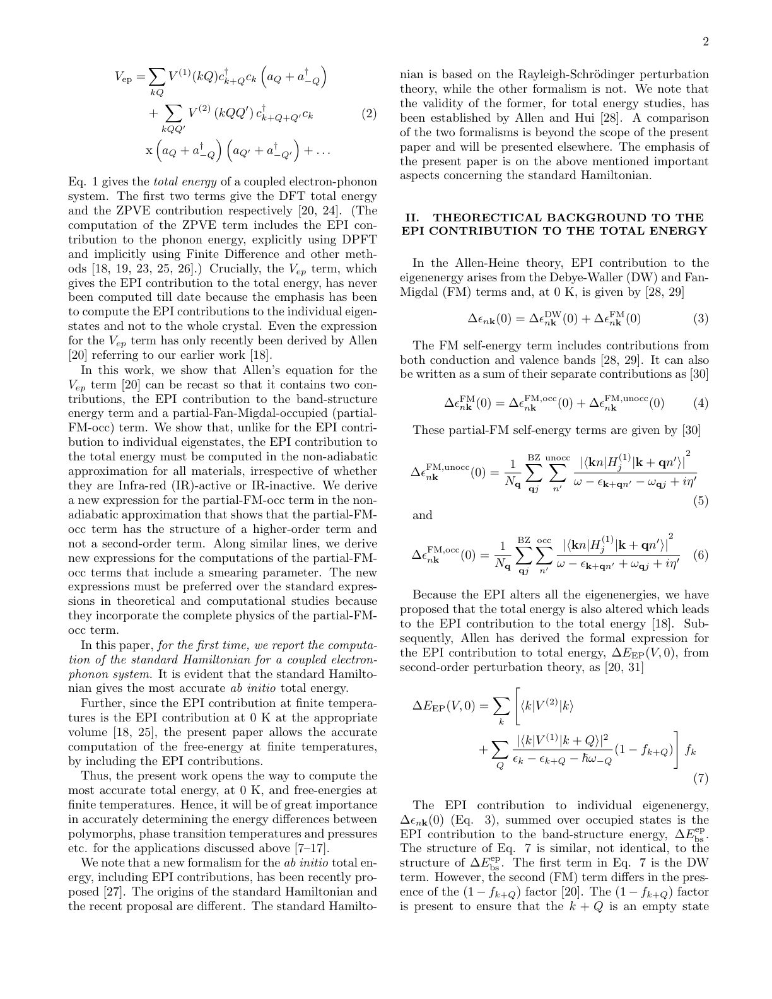
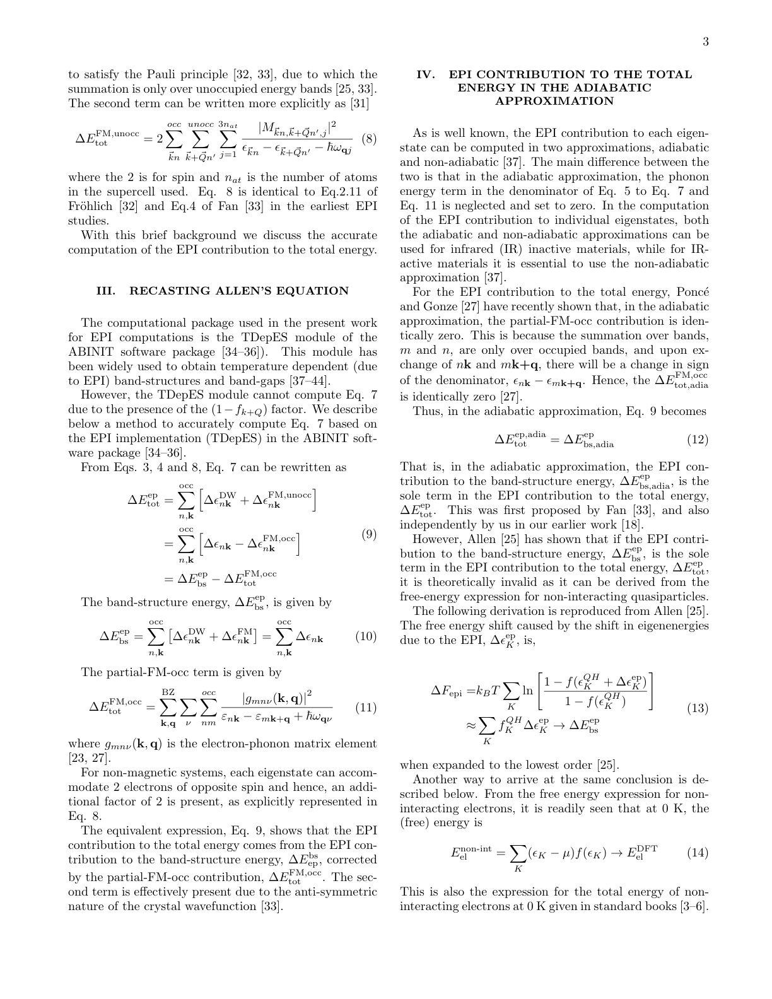
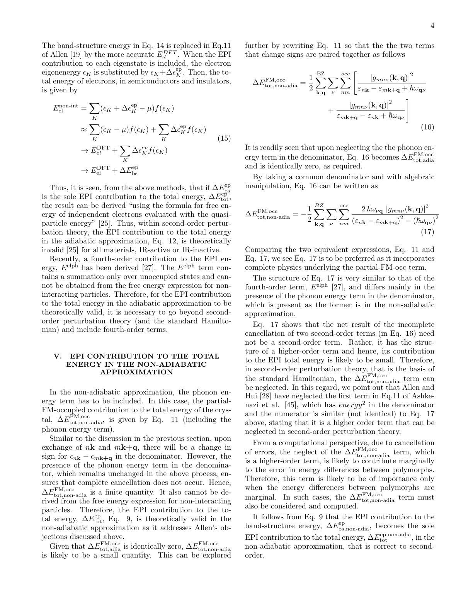
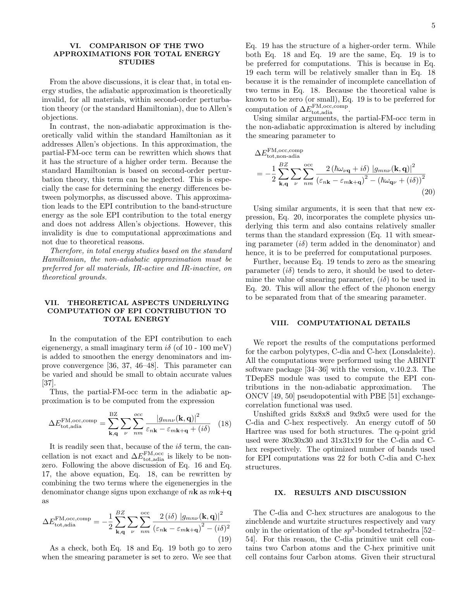
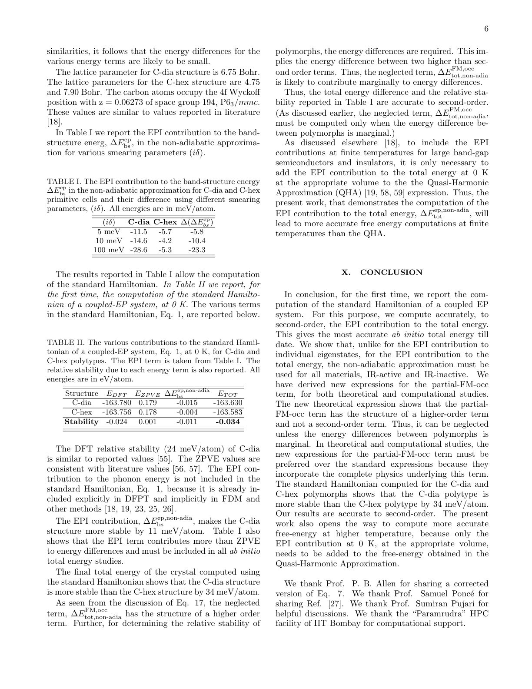
Summary. This paper provides a more accurate way to calculate how electron-phonon interactions affect the total energy of crystals. By deriving new mathematical formulas that better handle numerical stability, the authors achieved the most precise energy difference calculations for diamond and lonsdaleite to date.
Why it may be interesting. not directly relevant
Main problem. The difficulty in accurately computing the electron-phonon interaction (EPI) contribution to the total energy in crystalline solids, specifically addressing the theoretical invalidity of the adiabatic approximation and the computational challenges of the partial-FM-occupied term.
Main result. The authors derived new, computationally stable expressions for the partial-FM-occupied term within the non-adiabatic approximation and demonstrated the most accurate ab initio total energy calculation to date for carbon polymorphs (diamond and lonsdaleite).
Method. The study uses Rayleigh-Schrödinger perturbation theory and the non-adiabatic approximation, implemented via the TDepES module in the ABINIT software package.
Model / system. The system consists of crystalline solids, specifically carbon polymorphs (diamond and hexagonal lonsdaleite), modeled using a coupled electron-phonon Hamiltonian including DFT energy, zero-point vibrational energy, and the electron-phonon interaction (Debye-Waller and Fan-Migdal terms).
Key observables. Total energy, band-structure energy, partial-FM-occupied contribution, and relative stability of polymorphs.
Important parameters / regimes. Electron-phonon matrix elements, phonon frequencies, occupation numbers, and the imaginary smearing parameter (delta).
Assumptions / limitations. The use of the non-adiabatic approximation (including phonon energy in the denominator) is required for accuracy, particularly for IR-active materials.
Figures summary. Table I shows how the EPI contribution to band-structure energy varies with different smearing parameters; Table II reports various energy contributions to the standard Hamiltonian at 0 K.
Paper structure. The paper identifies the limitations of the standard Hamiltonian and adiabatic approximation, derives new mathematical expressions for the EPI terms, applies these to carbon polymorphs, and discusses the implications for finite-temperature free energy.
The standard Hamiltonian of a coupled electron-phonon system is based on second-order perturbation theory. The EPI contribution in the standard Hamiltonian consists of two terms, the EPI contribution to the band-structure energy and the partial-Fan-Migdal (FM)-occupied contribution. Within the non-adiabatic approximation, we derive a new expression for the partial-FM-occ contribution and show that it has the structure of a higher-order term, and not a second-order term. Along similar lines, we derive new expressions for the computation of the partial-FM-occ term. The new expressions for the partial-FM-occ term must be preferred over the standard expressions, in theoretical and computational studies, because they incorporate the complete physics underlying this term. Unlike the EPI contribution to individual eigenstates, the EPI contribution to the total energy must be computed in the non-adiabatic approximation for all materials, Infra-red (IR) active and IR-inactive. We report the computation of the standard Hamiltonian, for the first time, for Carbon polymorphs (diamond and hexagonal lonsdaleite) by including the EPI contribution to the total energy. This is the most accurate ab initio total energy reported till date. The present work also opens the way to compute the ab initio free-energy more accurately at finite temperatures by including the EPI contribution.
Authors: Matteo Cobelli, Stefano Sanvito
Type: theory · Category: disordered systems and neural networks · PDF: https://arxiv.org/pdf/2605.14671v1
Analysis basis: full PDF text, analyzed in chunks
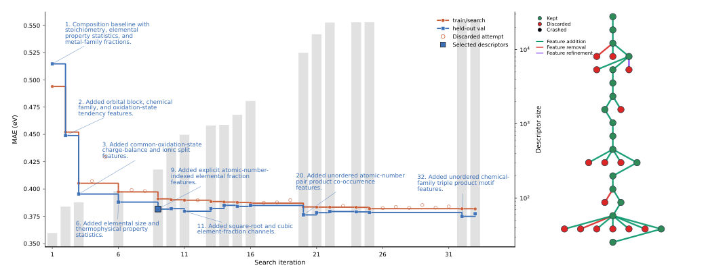
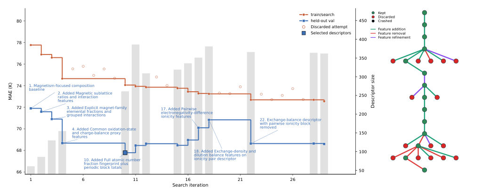
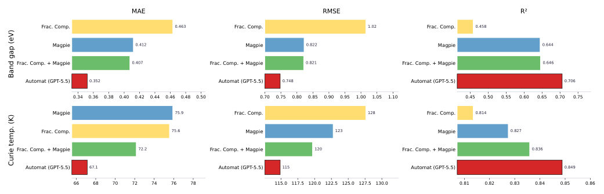
Summary. This paper introduces an autonomous AI agent framework called AUTOMAT that can perform scientific feature engineering for materials science. By iteratively designing chemical descriptors from formulas, the agent achieves higher predictive accuracy for electronic and magnetic properties than traditional manual methods. This demonstrates the potential for 'autoresearch' agents to automate complex scientific discovery tasks.
Why it may be interesting. not directly relevant
Main problem. The difficulty of designing effective, task-specific numerical descriptors for materials property prediction, which currently relies on manual and expertise-dependent feature engineering.
Main result. The AUTOMAT framework successfully uses an AI agent to autonomously design compositional descriptors that outperform standard baselines (Magpie, fractional composition) for predicting band gaps and Curie temperatures.
Method. An 'autoresearch' framework (AUTOMAT) where an LLM-based coding agent iteratively proposes, implements, and evaluates descriptor strategies using a Random Forest workflow and a greedy accept/reject optimization loop.
Model / system. The study focuses on chemical compounds and inorganic materials, specifically using chemical formulas to predict experimental band gaps and Curie temperatures in ferromagnetic compounds.
Key observables. Mean Absolute Error (MAE), Root Mean Square Error (RMSE), and R-squared (R2) values for property prediction.
Important parameters / regimes. The agent is restricted to information derivable solely from chemical formulas; the optimization uses a held-out validation set for stopping criteria.
Assumptions / limitations. The agent is restricted to composition-only information (no structural data); the machine learning model architecture (Random Forest) and hyperparameters are held constant.
Figures summary. Figure 1 shows the AUTOMAT workflow schematic; Figure 2 and 3 illustrate the trajectory of model performance and descriptor dimensionality over search iterations; Figure 4 compares final test performance across different descriptor representations.
Paper structure. The paper introduces the problem of manual feature engineering, presents the AUTOMAT agentic framework, details the experimental setup for band gap and Curie temperature prediction, reports performance gains and descriptor evolution, and discusses limitations such as dimensionality explosion and redundancy.
Autoresearch offers a flexible paradigm for automating scientific tasks, in which an AI agent proposes, implements, evaluates, and refines candidate solutions against a quantitative objective. Here, we use composition-based materials-property prediction to test whether such agents can perform a task beyond model selection and hyperparameter optimization: the design of input descriptors. We introduce Automat, an autoresearch framework where a coding agent based on a large language model generates composition-only descriptors for chemical compounds and evaluates them using a random forest workflow. The agent is restricted to information derivable from chemical formulas and iteratively proposes, implements, and tests chemically motivated descriptor strategies. We apply Automat, with OpenAI Codex using GPT-5.5 as the coding agent, to the prediction of experimental band gaps in inorganic materials and Curie temperatures in ferromagnetic compounds. In both tasks, Automat improves over fractional-composition, Magpie, and combined fractional-composition/Magpie baselines, while producing descriptor families that are chemically interpretable. These results provide a demonstration that autoresearch agents can generate competitive, task-specific materials descriptors without manual feature engineering during the run. They also reveal current limitations, including descriptor redundancy, sensitivity to greedy feature expansion, and the need for explicit complexity control, descriptor pruning, and more sophisticated search strategies.
Authors: Xinxin Wang, Yaqi Chen, Cui Ding, Lizhi Xu, Jian-Jian Miao, Guangdi Zhou, Zhuoyu Chen, Yu-Jie Sun, Jin-Feng Jia, Qi-Kun Xue
Type: experiment · Category: strongly correlated electrons · PDF: https://arxiv.org/pdf/2605.14806v1
Analysis basis: full PDF text, analyzed in chunks
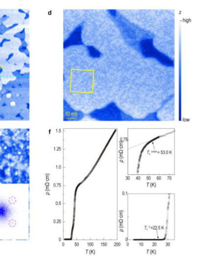
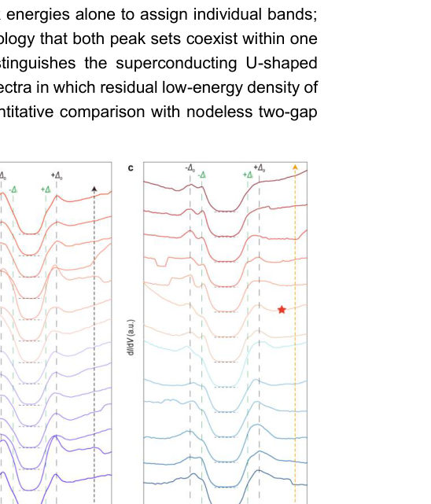
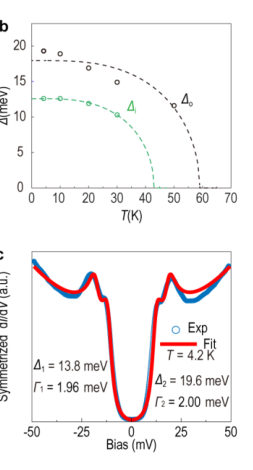
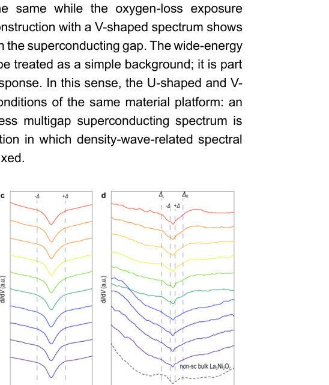
Summary. This paper uses atomic-resolution STM to show that bilayer nickelates possess an intrinsic nodeless, two-gap superconducting state. It reveals that oxygen loss during sample handling can create misleading V-shaped spectra that mimic nodal superconductivity. This finding is crucial for correctly identifying the pairing symmetry in this emerging class of high-temperature superconductors.
Why it may be interesting. not directly relevant
Main problem. Determining whether the superconducting pairing symmetry in Ruddlesden-Popper bilayer nickelates is nodal or nodeless, and understanding how oxygen stoichiometry affects the observed gap structure.
Main result. The study identifies an intrinsic nodeless, two-gap superconducting state in (La,Pr)3Ni2O7 films, demonstrating that previously observed V-shaped spectra are artifacts of oxygen loss rather than evidence of nodal symmetry.
Method. Atomic-resolution scanning tunneling microscopy and spectroscopy (STM/STS) were used on films grown via gigantic-oxidative atomic-layer-by-layer epitaxy, utilizing a cryogenic UHV transfer technique to preserve oxygen content.
Model / system. The physical system consists of 1.5-unit-cell (La,Pr)3Ni2O7 ultrathin films grown on SrLaAlO4 substrates, characterized by a sqrt(2) * sqrt(2) surface reconstruction.
Key observables. Superconducting gap scales (inner and outer), spectral line shapes (U-shaped vs. V-shaped), and temperature-dependent conductance evolution.
Important parameters / regimes. Gap energies of ~14 and ~20 meV, superconducting transition temperature (Tc) near 53 K, and oxygen loss controlled by UHV transfer time.
Assumptions / limitations. The use of transfer time as a proxy for oxygen stoichiometry and the assumption that the U-shaped spectra represent the intrinsic electronic state.
Figures summary. Fig 1: Crystal structure, STM topography, and resistivity; Fig 2: Atomic-resolution imaging and double-gap U-shaped spectra; Fig 3: Temperature evolution of the gap and Dynes model fits.
Paper structure. The paper introduces the nickelate system, describes the growth and UHV transfer method, presents atomic-scale spectroscopic evidence for a nodeless two-gap state, analyzes the impact of oxygen loss on spectral shape, and concludes with the identification of the intrinsic superconducting state.
Ruddlesden-Popper bilayer nickelates provide an emerging platform for studying high-temperature superconductivity, yet the superconducting pairing symmetry remains under debate. Here, we use atomic-resolution scanning tunnelling microscopy and spectroscopy to investigate superconducting 1.5-unit-cell (La,Pr)3Ni2O7 films grown on SrLaAlO4. A cryogenic ultrahigh-vacuum (UHV) sample transfer preserves an ordered sqrt(2) * sqrt(2) surface and yields reproducible U-shaped spectra with two gap scales of ~14 and ~20 meV and extended flat zero-conductance bottoms. By contrast, samples exposed for a longer time in UHV without cooling during transfer show V-shaped spectra despite retaining the surface reconstruction and a transport superconducting transition onset above 40 K. Wide-energy-range spectra indicate that oxygen loss can mix density-wave-related spectral weight. Our measurements provide an atomic-scale observation of the intrinsic nodeless superconducting gap in bilayer nickelate ultrathin films.
Authors: Melissa Yactayo, H. S. Tarazona, O. Copie, J. -C. Rojas-Sánchez, J. Quispe-Marcatoma, C. V. Landauro
Type: both · Category: other · PDF: https://arxiv.org/pdf/2605.14545v1
Analysis basis: full PDF text, analyzed in chunks
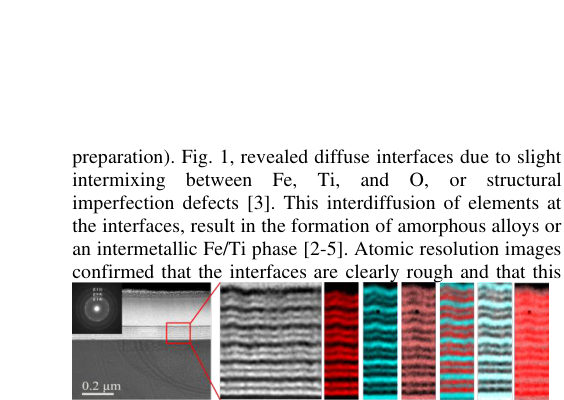
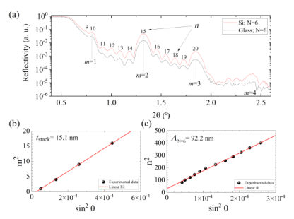
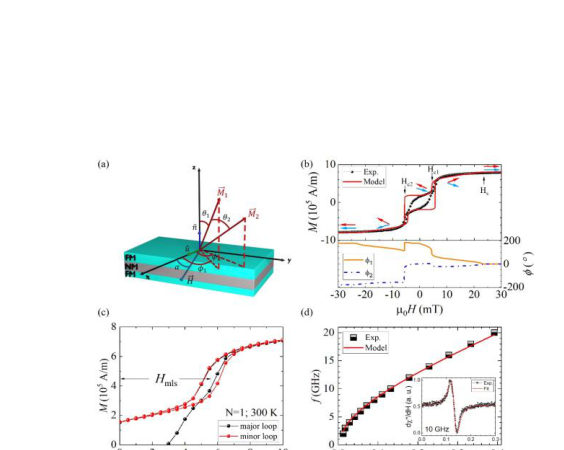
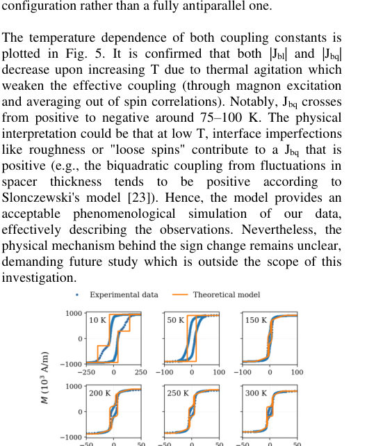
Summary. This paper explores the magnetic behavior of Fe/Ti multilayers, highlighting how biquadratic exchange coupling drives transitions between collinear and non-collinear magnetic states. By combining structural analysis with magnetometry and FMR, the authors show that interface roughness and temperature-dependent coupling are critical to understanding the system's magnetism.
Why it may be interesting. not directly relevant
Main problem. Investigating how structural characteristics like interface roughness and interdiffusion influence the static and dynamic magnetic properties, specifically the role of biquadratic exchange coupling in Fe/Ti multilayers.
Main result. The study demonstrates that including biquadratic exchange coupling is essential to reproduce experimental hysteresis and FMR data, revealing a transition from antiferromagnetic to non-collinear magnetic configurations as temperature increases.
Method. Experimental techniques include HRTEM, XRD, XRR, SQUID magnetometry, and VNA-FMR, complemented by a macrospin model and numerical relaxation algorithms to minimize free energy.
Model / system. The system consists of weakly antiferromagnetically coupled Fe/Ti superlattices (Fe/Ti/Fe trilayers and N=1 to 6 superlattices). The model uses a macrospin approach incorporating Zeeman energy, uniaxial and effective perpendicular anisotropy, and both bilinear and biquadratic exchange coupling.
Key observables. Hysteresis loops (major/minor), FMR absorption spectra, resonance field vs. frequency dispersion, and total magnetization.
Important parameters / regimes. Bilinear (J_bl) and biquadratic (J_bq) exchange constants, temperature (10-300 K), layer thicknesses, and anisotropy fields.
Assumptions / limitations. The macrospin model treats each Fe layer as a single magnetic domain; the FMR modeling uses the Smit-Beljers approach without damping.
Figures summary. Fig 1: HRTEM and electron diffraction for structure/texture; Fig 2: XRR profiles for thickness; Fig 3: Model schematic and M-H loop comparison; Fig 5: Temperature dependence of coupling and magnetization; Fig 6: Theoretical phase diagram; Fig 7: FMR frequency dependence.
Paper structure. The paper begins with structural characterization (TEM, XRD, XRR), moves to static magnetic measurements (SQUID) and their temperature dependence, then presents dynamic magnetic studies (FMR), and concludes with a theoretical phase diagram and model validation.
This work explores the static and dynamic magnetic properties of weakly antiferromagnetically coupled Fe/Ti superlattices, emphasizing the link between magnetic behavior and structural characteristics. HRTEM and XRD analyses confirm alternating Fe and Ti layers with rough interfaces, especially in upper layers. Magnetic measurements reveal two-step hysteresis loops and a temperature and thickness-dependent interlayer exchange coupling (IEC). A macrospin model incorporating bilinear and biquadratic coupling reproduces the experimental data and supports a phase diagram analysis identifying non-collinear configurations. The results underscore the impact of structural imperfections and highlight the crucial role of biquadratic exchange in Fe/Ti/Fe multilayers.
Authors: Wookjin Jung, Serin Jeong, Kyulim Kim, Dongkyu Lee, Sang Ouk Kim, Jihyeon Yeom
Type: both · Category: disordered systems and neural networks · PDF: https://arxiv.org/pdf/2605.14353v1
Analysis basis: full PDF text, analyzed in chunks
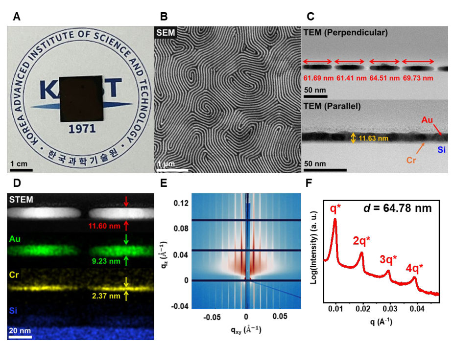
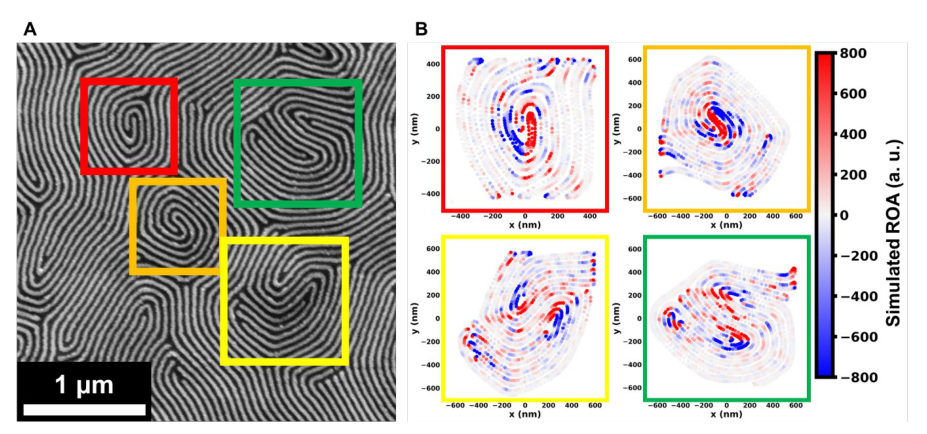
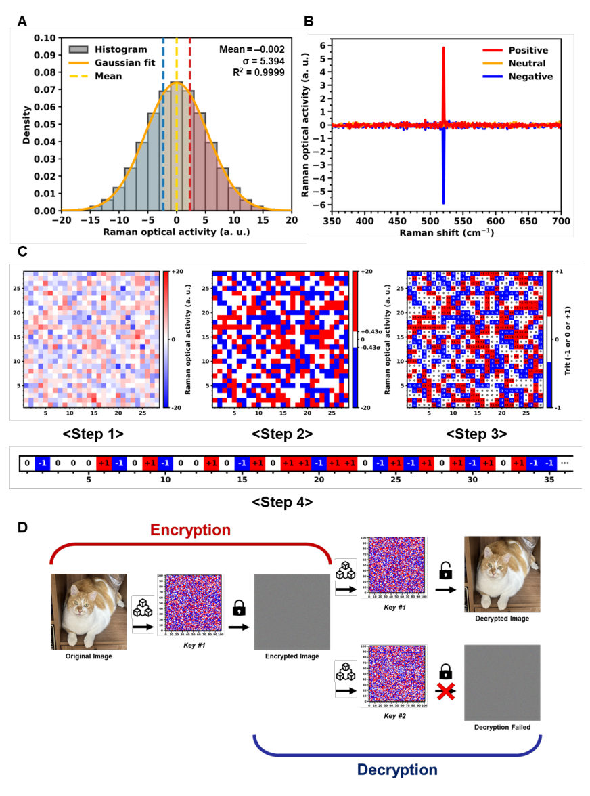
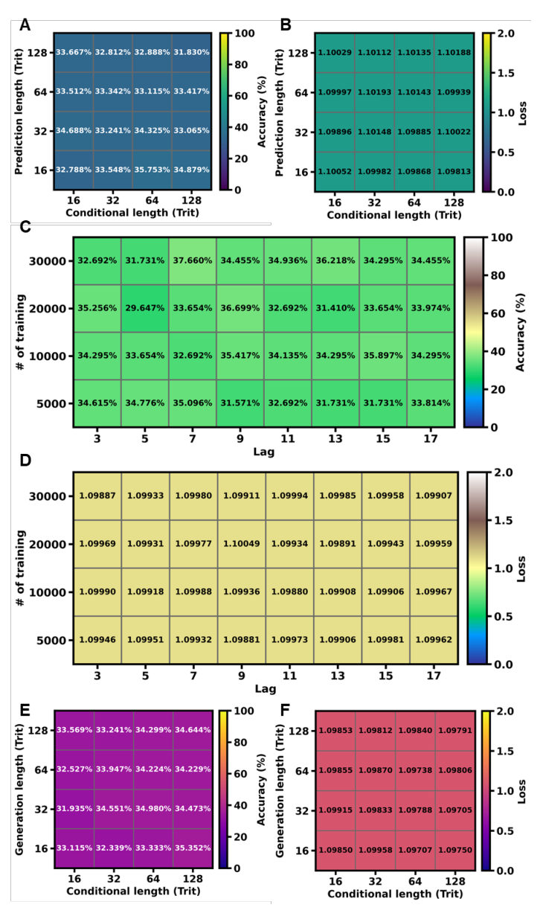
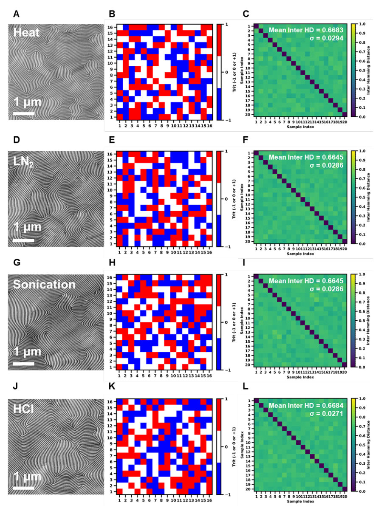
Summary. This paper presents a method to turn fabrication defects in self-assembled nanostructures into a high-density source of random numbers. By using the local chirality of gold nanopatterns, the researchers can generate ternary (three-state) random sequences that are more information-dense and secure than traditional binary methods.
Why it may be interesting. not directly relevant
Main problem. The research aims to repurpose unavoidable fabrication-induced stochasticity in nanostructures, traditionally viewed as defects, into a functional resource for high-density ternary entropy harvesting for information security.
Main result. The authors demonstrated a platform that harvests ternary random sequences (trits) from the local chiroptical response of gold nanopatterns, achieving near-ideal Shannon entropy (1.585 bits per trit) and passing NIST statistical and machine-learning-based predictability tests.
Method. The method involves using block copolymer self-assembly to create stochastic gold nanopatterns, followed by Raman Optical Activity (ROA) mapping to extract handedness-dependent optical signals, and statistical/ML analysis to validate randomness.
Model / system. The physical platform consists of gold (Au) nanopatterns formed via the self-assembly of polystyrene-block-poly(methyl methacrylate) (PS-b-PMMA) on silicon, PDMS, or ITO substrates, characterized by a fingerprint-like, locally chiral morphology.
Key observables. Chiroptical contrast (positive, negative, or neutral), Raman Optical Activity (ROA) signal intensity, Shannon entropy, and Hamming distance.
Important parameters / regimes. Average lateral period of ~64 nm, Au thickness of ~11.6 nm, and ternary encoding density of log2(3) bits per trit.
Assumptions / limitations. The primary assumption is that the local structural stochasticity is sufficiently uncorrelated and unpredictable to serve as a valid entropy source.
Figures summary. Figure 1 shows structural characterization (SEM, TEM, GISAXS); Figure 2/3 presents the ternary ROA maps and statistical validation (entropy, autocorrelation); Figure 4 shows machine-learning predictability analysis; Figure 5 demonstrates robustness under environmental stressors.
Paper structure. The paper introduces the concept of repurposing defects, describes the fabrication and characterization of the Au nanopatterns, details the chiroptical readout and ternary digitization, provides rigorous statistical and ML-based validation of the entropy quality, and concludes with robustness and scalability assessments.
Nanoscale fabrication inevitably produces local stochasticity that is commonly treated as a defect, but can instead be harnessed as a material resource for information security. Here we report a chiroptical platform for ternary entropy harvesting based on stochastic Au nanopatterns formed by block copolymer self-assembly. By transducing fabrication-induced stochastic microstates into handedness-dependent optical responses through chiroptical mapping, our platform enables native ternary digitization rather than conventional binary encoding, allowing physically harvested ternary random sequences to be used for key generation. This raises the information density to log2(3) = 1.585 bits per trit, approximately 58.5% higher than the binary limit, enabling more entropy to be harvested from a limited physical footprint. The harvested outputs exhibit near-balanced symbol populations, negligible spatial and inter-sample correlations, Shannon entropy approaching the ternary ideal, and resistance to statistical and machine-learning-based prediction. These results establish self-assembled chiroptical nanostructures as a scalable platform for cryptographic key generation, secure edge devices, and distributed Internet-of-Things platforms.
Authors: Abderrahime Sekkat, Shiling Dong, Jenny Baker, Matt Burnell, Tapas Mallick, Ruy S. Bonilla, Robert L. Z. Hoye
Type: both · Category: other · PDF: https://arxiv.org/pdf/2605.13991v1
Analysis basis: full PDF text, analyzed in chunks
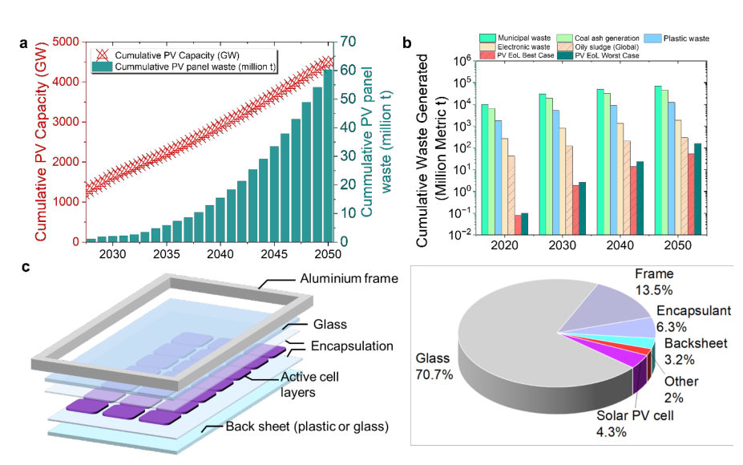
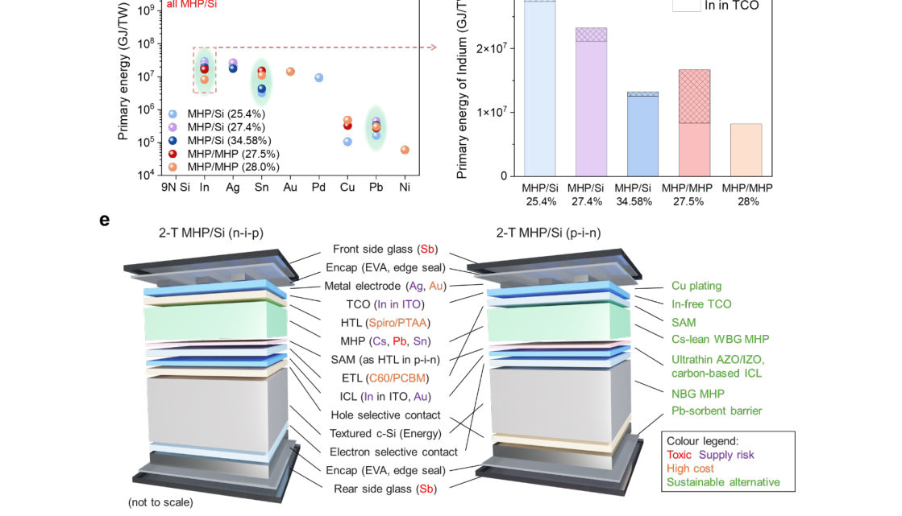
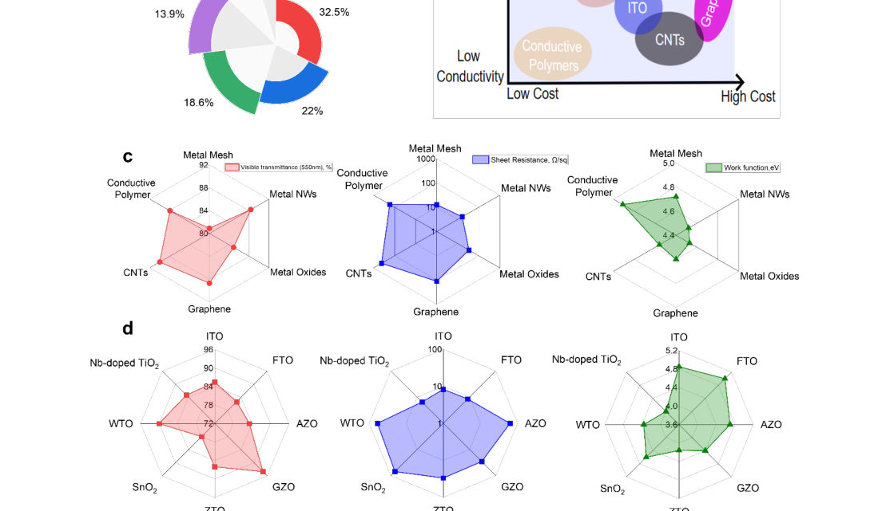
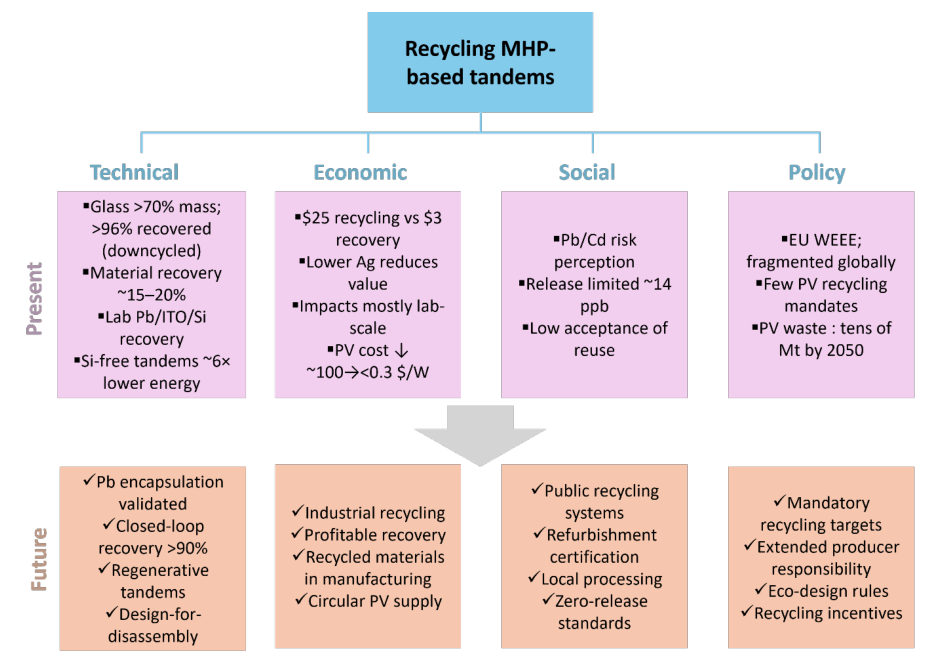
Summary. This review examines how perovskite-based tandem solar cells can be deployed sustainably at a global scale. It highlights the potential for lower carbon footprints and better recycling compared to silicon, while warning of risks related to indium scarcity and lead management.
Why it may be interesting. not directly relevant
Main problem. The paper addresses the sustainability and circularity challenges of scaling perovskite-based tandem photovoltaics to terawatt-scale deployment, specifically focusing on waste management, material scarcity, and end-of-life recycling.
Main result. The review identifies that while perovskite tandems offer lower carbon footprints and energy payback times than silicon, their success depends on overcoming indium supply risks, managing lead toxicity, and implementing effective recycling protocols for monolithic structures.
Method. An integrated review and assessment combining life-cycle assessment (LCA) data, technoeconomic analysis, and policy framework evaluation across the device lifecycle.
Model / system. The physical systems studied are metal-halide perovskite (MHP) tandem solar cells, including MHP/Silicon (MHP/Si) and all-perovskite architectures, compared against standard crystalline silicon (c-Si) photovoltaics.
Key observables. Power conversion efficiency (PCE), energy payback time (EPBT), global warming potential (GWP), carbon footprint (CO2eq), and Demand-Production Ratio (DPR) for critical materials.
Important parameters / regimes. Terawatt-scale deployment, efficiency records (up to 34.85%), and material mass inventories (e.g., Pb content < 0.003 g Wp^-1).
Assumptions / limitations. Assumes the continued scaling of PV capacity to terawatt levels and relies on existing/projected life-cycle assessment models for environmental impact estimation.
Figures summary. Figure 1 shows projected global PV waste volumes and capacity growth; other figures (inferred) likely illustrate the supply-demand context for indium and the stages of the PV lifecycle.
Paper structure. The paper begins by defining the sustainability crisis of silicon PV, then evaluates the technical advantages and circularity challenges of perovskite tandems, specifically addressing material substitution, recycling protocols, and policy frameworks needed for responsible commercialization.
As photovoltaics (PVs) scale from one to multiple terawatts over the next decade, ensuring sustainable deployment is urgently required. Crystalline silicon (c-Si) PVs, the current industry standard, will generate an estimated 160 million tonnes of waste by 2050, and there remains complex technoeconomic challenges associated with their recycling. Metal-halide perovskite (MHP)-based tandem PVs not only promise higher power conversion efficiencies than single-junction c-Si devices, but also offer intrinsic advantages for circularity, including simpler device architectures, low-temperature processing, and more accessible materials recovery routes. At this pivotal juncture when perovskite PVs begin to enter the market, this review examines the critical circularity challenges that must be addressed: substitution of scarce raw materials, scalable recycling protocols, cost-effective stack delamination, safe lead sequestration, and policy frameworks to encourage circularity across the device lifecycle with effective incentives. By integrating the materials, technoeconomic and policy dimensions that go beyond conventional lifecycle assessments, we outline actionable strategies to co-optimize device performance and sustainability. This review aims to guide researchers, policymakers, and industry stakeholders in steering perovskite-based tandem PVs towards a circular and responsible commercialization pathway within the global clean-energy transition.
Authors: Ryota Miyazaki, Shunzhen Wang, Guanxiong Qu, Yukihiro Marui, Yuta Kobayashi, Masashi Kawaguchi, Masamitsu Hayashi
Type: both · Category: other · PDF: https://arxiv.org/pdf/2605.14975v1
Analysis basis: full PDF text, analyzed in chunks
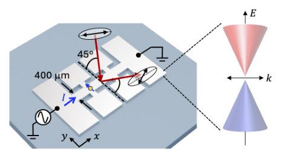
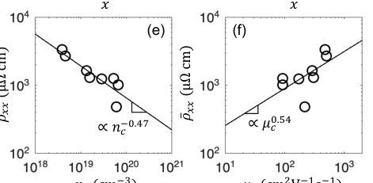
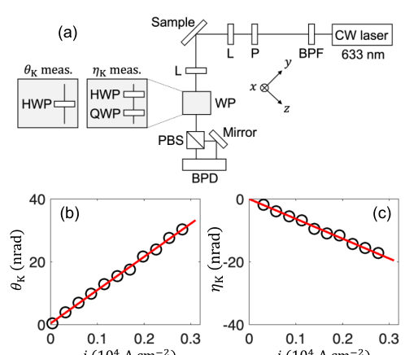
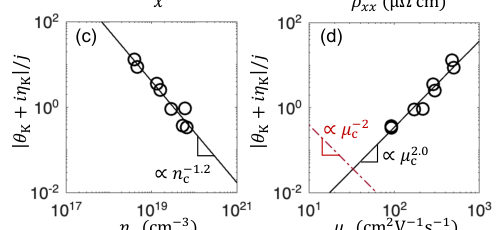
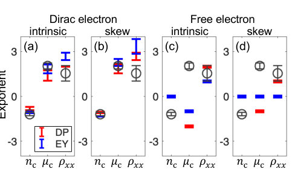
Summary. This paper demonstrates that the current-induced MOKE in Bi-Sb alloys can effectively distinguish between Dirac and parabolic electronic structures through specific scaling relations with resistivity and mobility. It also explores how the interplay between spin and orbital Hall effects influences the MOKE signal magnitude.
Why it may be interesting. not directly relevant
Main problem. The study investigates the microscopic origin of the current-induced magneto-optical Kerr effect (MOKE) in Bi-Sb alloys and seeks to determine if the signal can serve as a probe for Dirac carriers.
Main result. The MOKE signal scales with resistivity as rho^1.7 and mobility as mu^2.0, a scaling behavior that supports a Dirac electron model over a conventional parabolic free-electron model.
Method. The researchers combined experimental MOKE and transport measurements on Bi-Sb thin films with numerical modeling using Maxwell's equations, the Kubo formula, and tight-binding calculations.
Model / system. The physical system consists of Bi(1-x)Sb(x) alloy thin films in the semimetallic regime, specifically focusing on the Bi-rich regime where carriers exhibit Dirac-like dispersion near the L-point.
Key observables. Kerr rotation angle (theta_K), Kerr ellipticity (eta_K), resistivity (rho_xx), carrier density (n_c), and mobility (mu_c).
Important parameters / regimes. Sb concentration (x), spin diffusion length (ls approx 18 nm), and the scaling exponent (alpha) relating mobility to carrier density.
Assumptions / limitations. The model calculations may neglect contributions from topological surface states, which could account for discrepancies in certain Sb concentrations.
Figures summary. Fig 1 shows the device schematic and spin accumulation concept; Fig 2 presents transport properties (resistivity, density, mobility) vs x; Fig 5 compares scaling exponents for different models; Fig 7 shows the x-dependence of SHE and OHE contributions to the MOKE signal.
Paper structure. The paper introduces the MOKE problem, describes the experimental setup and material growth, presents transport and MOKE scaling results, compares Dirac vs. free-electron models, analyzes the interplay between spin and orbital Hall effects, and concludes with a discussion of model limitations.
We study the current-induced magneto-optical Kerr effect (MOKE) in Bi$_{1-x}$Sb$_x$ semi-metalic alloys. The MOKE signal is found to be the largest in pure Bi ($x=0$), exceeding that of transition metals by nearly four orders of magnitude, and decreases monotonically with increasing Sb concentration. We find the MOKE signal scales with the resistivity ($ρ$) as $ρ^{1.7 \pm 0.6}$ and with the mobility ($μ_\mathrm{c}$) as $μ_\mathrm{c}^{2.0 \pm 0.2}$. Model calculations show that such exponent can be accounted for if the Dirac electrons are responsible for the generation of spin current. This is in contrast to the $ρ^{2}$ and $μ_\mathrm{c}^{-2}$ scaling of the MOKE signal induced by the free electrons in parabolic band. The scaling of the MOKE amplitude with the resistivity also partly accounts for the order of magnitude differences of the signal observed between metals, semimetals, and semiconductors. These results demonstrate that current induced MOKE serves as an effective means to characterize the nature of spin current in materials with diverse electronic structures.
Authors: Xu Yang, Sheng Zhang, Ke Wei, Xinhua Wang, Xinyu Liu, Itsuki Furuhashi, Markus Pristovsek
Type: experiment · Category: other · PDF: https://arxiv.org/pdf/2605.14329v1
Analysis basis: full PDF text, analyzed in chunks
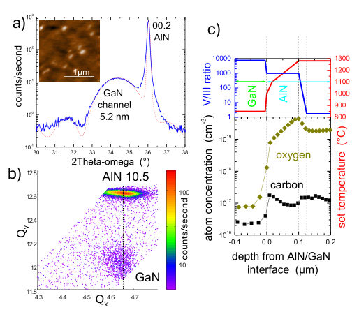
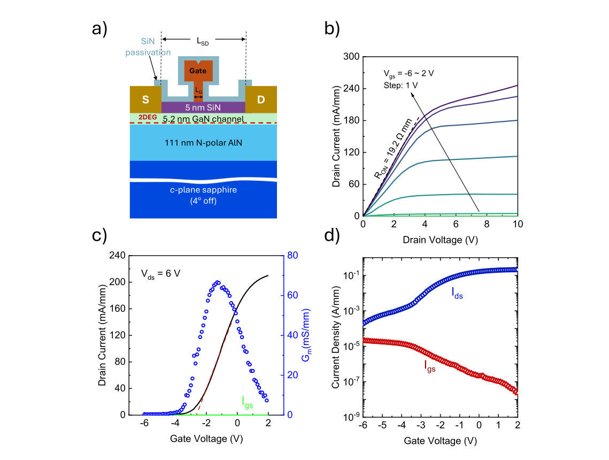
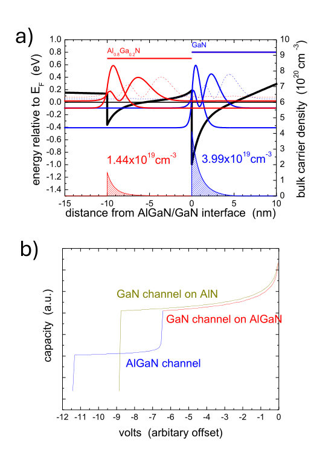
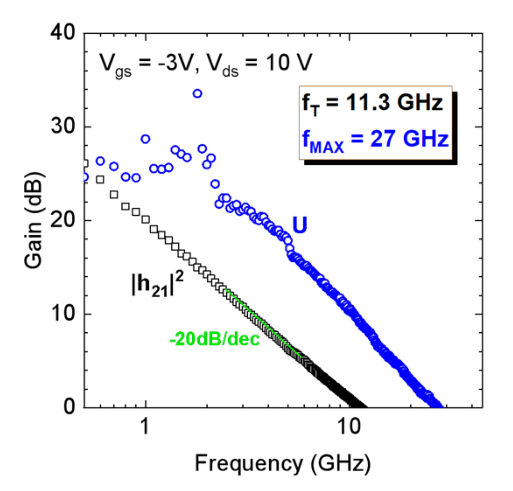
Summary. The researchers developed N-polar AlN-based transistors with significantly improved on/off ratios by replacing AlGaN layers with an abrupt AlN/GaN interface. This structural change reduces gate leakage and prevents a secondary electron gas from acting as a leakage path. The resulting devices show high saturation currents and improved power efficiency for high-frequency applications.
Why it may be interesting. not directly relevant
Main problem. Improving the performance of N-polar AlN-based high electron mobility transistors (HEMTs) by addressing low on/off ratios, high gate leakage, and impurity incorporation.
Main result. Achieved an on/off ratio as high as 10,000 and saturation currents over 240 mA/mm by using an abrupt AlN/GaN heterostructure with a dedicated AlN transition layer.
Method. Metal-organic vapor phase epitaxy (MOVPE) was used to grow N-polar AlN on sapphire, utilizing a temperature and NH3 flow ramping technique to optimize the transition layer and reduce impurities.
Model / system. N-polar AlN-based HEMTs featuring a 5.2 nm GaN channel and an abrupt AlN/GaN heterostructure grown on (000-1) sapphire substrates.
Key observables. Threshold voltage (Vth), saturation current (Isat), on/off ratio, gate leakage current, transconductance (gm), and RF cutoff frequencies (fT, fMAX).
Important parameters / regimes. GaN channel thickness of 5.2 nm, sheet resistance of 2000 Ohm/square, and RMS surface roughness below 0.5 nm.
Assumptions / limitations. The performance is limited by the high sheet resistance resulting from dislocation density inherent in hetero-epitaxial growth on sapphire.
Figures summary. Figure 1a shows low interface roughness; Figure 2d displays transfer curves and subthreshold slope; Figure 4 presents measured RF cutoff frequencies.
Paper structure. The paper introduces the device architecture, details the MOVPE growth optimization and impurity control, presents structural characterization (XRD, AFM, SIMS), reports electrical and RF performance metrics, and discusses limitations.
We report N-polar AlN-based high-electron mobility transistors (HEMTs) with a GaN channel thickness of 5.2 nm on N-polar AlN on sapphire. The threshold voltage is around -2.4 to -3.0 V with saturation currents over 240 mA/mm and on/off ratios as high as 10,000, much higher than previously reported N-polar AlN-based HEMTs. The high on/off ratio is attributed to the use of an abrupt AlN/GaN heterostructure with a dedicated AlN transition layer, together with improved gate leakage. The high frequency properties as well as the on-resistance of ~20 Ohm mm are all limited by the 2000 Ohm/square sheet resistance of the channel layer.
Authors: Hanqi Pi, Yves H. Kwan, Haoyu Hu, Yi Jiang, Dumitru Călugăru, Jie Shan, Kin Fai Mak, Miguel M. Ugeda, Dmitri K. Efetov, Maia G. Vergniory, B. Andrei Bernevig
Type: both · Category: strongly correlated electrons · PDF: https://arxiv.org/pdf/2605.13984v1
Analysis basis: full PDF text, analyzed in chunks
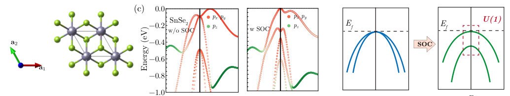
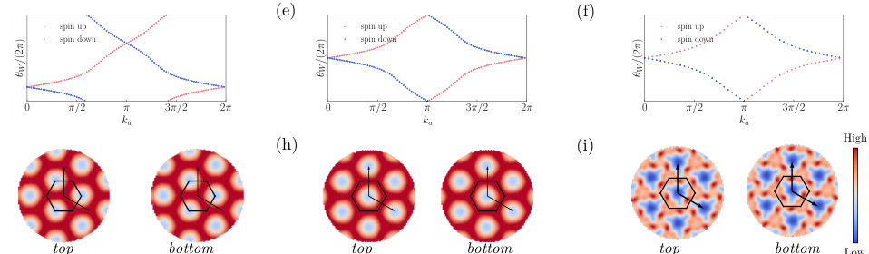
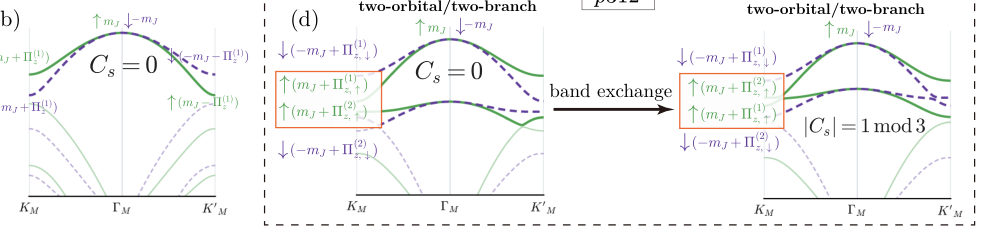
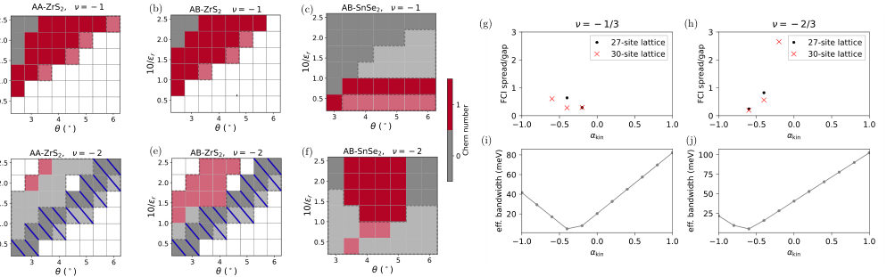
Summary. This paper investigates twisted 1T-ZrS2 and 1T-SnSe2 moiré systems as platforms for topological physics. It shows that inter-orbital and inter-branch coupling generates isolated topological bands, which can host various interaction-driven phases such as Chern insulators and fractional Chern insulators.
Why it may be interesting. The paper explores the emergence of topological order and fractionalized states in a system with reduced spin symmetry (spin-U(1)), which is highly relevant to the study of many-body dynamics and topological phases in correlated systems.
Main problem. The study aims to identify new moiré platforms hosting isolated topological flat bands and to understand the microscopic origin of topology and interaction-driven phases in Gamma-valley moiré systems.
Main result. The authors demonstrate that twisted 1T-ZrS2 and 1T-SnSe2 host isolated topological moiré valence bands, including quantum spin Hall and high spin Chern states, and predict various interaction-driven phases like fractional Chern insulators.
Method. The research utilizes large-scale ab initio DFT calculations, symmetry-constrained continuum modeling, and many-body methods including Hartree-Fock and Exact Diagonalization.
Model / system. The system consists of twisted bilayer 1T-ZrS2 (AA and AB stacking) and 1T-SnSe2 (AB stacking) moiré superlattices, characterized by Gamma-valley physics and Ising-type spin-orbit coupling.
Key observables. Spin Chern number (Cs), spin-projected Wilson loops, C3 symmetry indicators, spin-polarized Chern insulators, and fractional Chern insulators (FCIs).
Important parameters / regimes. Twist angle, interaction strength (10/epsilon_r), displacement field (D), and filling factor (nu).
Assumptions / limitations. The use of a continuum model approximation and the leading-harmonic approximation for the moiré potential.
Figures summary. Figure 1 shows crystal structures and monolayer band structures with orbital projections; Figure 2 compares DFT and continuum model moiré band structures.
Paper structure. The paper introduces the materials and electronic structure, develops a hierarchy of continuum models based on symmetry, analyzes single-particle topological properties, and concludes with many-body phase diagrams using Hartree-Fock and Exact Diagonalization.
Twisted moiré superlattices hosting topological flat bands provide a platform to explore the interplay between topology and correlations. Here we investigate topological band structures in $Γ$-valley moiré systems based on 1T-ZrS$_2$ and 1T-SnSe$_2$. Using large-scale ab initio calculations and continuum modelling, we demonstrate that both materials exhibit an approximate spin-$U(1)$ symmetry and host isolated topological moiré valence bands, including quantum spin Hall and high spin Chern states. By constructing a hierarchy of $Γ$-valley moiré continuum models, we show that isolated moiré bands carry a trivial $C_3$ symmetry indicator when the low-energy physics is described by a single effective orbital and a single layer-hybridized branch, either bonding or antibonding. Topological bands therefore arise from inter-branch and/or inter-orbital coupling. Moreover, we determine interaction-driven phase diagrams using Hartree--Fock and exact diagonalization, finding various phases tunable by twist angle, interaction strength, and displacement field. We identify specific conditions under which fractional Chern insulators are favored. Together with previous work showing that the moiré conduction bands of 1T-ZrS$_2$ and 1T-SnSe$_2$ realize $M$-valley twisting and host quasi-one-dimensional physics, our results establish these systems as ideal platforms for strongly correlated moiré physics and provide a systematic framework for understanding topological band structures in $Γ$-valley moiré materials.
Authors: Anton Bochkarev, Yury Lysogorskiy, Ralf Drautz
Type: theory · Category: disordered systems and neural networks · PDF: https://arxiv.org/pdf/2605.15073v1
Analysis basis: full PDF text, analyzed in chunks
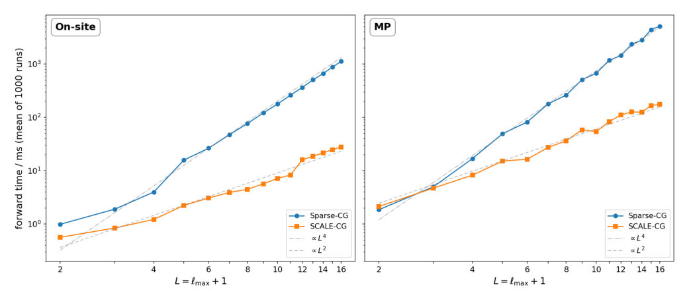
Summary. This paper introduces SCALE-CG, an efficient algorithm for computing equivariant tensor products in machine learning potentials. It solves the problem of capturing parity-odd angular momentum channels while significantly reducing computational complexity from O(L^4) to O(L^3). This enables much larger angular momentum expansions in atomistic simulations.
Why it may be interesting. not directly relevant
Main problem. The computational bottleneck in O(3)-equivariant graph neural networks caused by the high scaling of Clebsch-Gordan tensor products and the inability of standard scalar grids to capture parity-odd channels.
Main result. The development of the SCALE-CG algorithm, which achieves O(L^3) complexity and uses a surface-curl identity to recover parity-odd channels, with empirical wall-clock scaling of O(L^2).
Method. A structured tensor-product grid approach (Gauss-Legendre and Fourier) combined with CP decomposition and a surface-curl pairing (spherical Poisson bracket) to evaluate contracted tensor products.
Model / system. Equivariant graph neural networks (GNNs) and atomistic machine learning potentials (such as the ACE-family) operating on O(3) irreducible representations with explicit parity.
Key observables. Clebsch-Gordan coefficients, parity-even and parity-odd channels, and computational scaling (wall-clock time vs. angular momentum L).
Important parameters / regimes. Maximum angular momentum (L), CP decomposition rank (C), number of radial channels (N), and parity (p).
Assumptions / limitations. The O(L^3) scaling assumes a fixed Canonical Polyadic (CP) rank; the surface-curl construction for parity-odd channels vanishes if inputs are identical and mixing is symmetric.
Figures summary. Figure 1 shows log-log plots of wall time versus L for on-site contraction and message-passing, comparing SCALE-CG against sparse direct implementations and theoretical scaling lines.
Paper structure. The paper introduces coupling operations, derives the surface-curl identity, implements O(L^4) and O(L^3) pipelines, and provides numerical validation and scaling benchmarks.
We present an $\mathcal{O}(L^3)$ algorithm for evaluating contracted Clebsch--Gordan tensor products in $\mathrm{O}(3)$-equivariant machine learning potentials at fixed Canonical Polyadic (CP) rank. Mapping the angular integral to a structured Gauss--Legendre and Fourier tensor-product grid decouples the radial channel contractions from the angular transforms. The antisymmetric parity-odd Clebsch--Gordan channels, unreachable by the symmetric pointwise product on a scalar $S^2$ grid, are recovered through the surface-curl pairing $\hat r \cdot [\nabla_{S^2} A \times \nabla_{S^2} B]$, the spherical Poisson bracket, which supplies the $L=1$ angular momentum on the grid while preserving rotational equivariance. The construction extends to parity-aware equivariant message passing in atomic-cluster-expansion-style architectures and is verified by direct numerical quadrature. The full uncontracted Clebsch--Gordan tensor product remains subject to the $\mathcal{O}(L^4)$ output-size lower bound. A benchmark shows wall-clock scaling empirically as $L^2$ across the practical $l_{\max}$ range. For the on-site contraction this is pre-asymptotic, giving way to $L^3$ at large $l_{\max}$. For message passing it is structural and the runtime is memory-bandwidth bound on $L^2$-sized grid tensors.
Authors: Gyanti Prakash Moharana
Type: theory · Category: strongly correlated electrons · PDF: https://arxiv.org/pdf/2605.14361v1
Analysis basis: full PDF text, analyzed in chunks
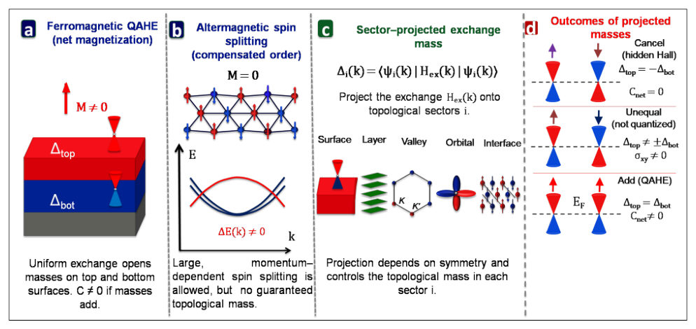
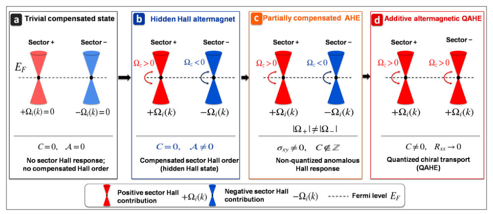
Summary. This paper proposes a new criterion for identifying altermagnetic Chern insulators, arguing that topological Hall responses depend on how the exchange field projects onto specific low-energy sectors. It introduces a diagnostic tool to distinguish between 'hidden' Hall effects that cancel globally and 'additive' quantized Hall effects. This provides a roadmap for designing new altermagnetic materials with controllable topological transport.
Why it may be interesting. not directly relevant
Main problem. Distinguishing between simple altermagnetic spin splitting and the formation of true altermagnetic Chern matter, specifically addressing why spin splitting alone is insufficient to establish a quantized Hall response.
Main result. The paper establishes that the decisive factor for altermagnetic Chern matter is the projection of the exchange mass onto Hall-active low-energy sectors, introducing a (C, A) diagnostic to separate hidden Hall responses from additive quantized Hall phases.
Method. The authors formulate a 'projected-mass criterion' and a two-channel (C, A) diagnostic framework to classify topological regimes based on the symmetry and parity of exchange-driven band reconstruction.
Model / system. The study focuses on altermagnets (collinear compensated magnetic order with spin-split bands) and altermagnetic Chern matter, including interfacial heterostructures (TI/altermagnet), intrinsic compounds, and 2D/van der Waals systems.
Key observables. Chern number (C), Hall conductance (sigma_xy), longitudinal resistance (Rxx), and the compensated Hall functional (A).
Important parameters / regimes. Exchange mass sign, thickness, interface registry, strain, gating, and disorder broadening (Gamma).
Assumptions / limitations. The framework assumes the existence of specific low-energy sectors (surface, valley, or orbital) where the exchange mass can be projected.
Figures summary. Figure 1 shows how exchange projection generates Chern mass via interface/thickness variables; Figure 2 depicts the (C, A) diagnostic separating additive and compensated topologies; Figure 3 provides a materials roadmap for candidate platforms.
Paper structure. The paper identifies the insufficiency of spin-splitting, introduces the mathematical framework for projected exchange mass, develops the (C, A) diagnostic for classifying topological regimes, and concludes with a materials design roadmap and experimental verification hierarchy.
Altermagnetic spin splitting alone does not define Chern matter. The relevant object is the exchange mass projected onto Hall-active surface, valley, orbital or interface sectors. We formulate this projected-mass criterion for compensated magnetic topology. The resulting two-channel $(C,\mathcal{A})$ diagnostic separates hidden compensated Hall responses from additive altermagnetic quantum anomalous Hall phases in a global insulating gap. It also guides interface, thickness and materials design strategies.
Authors: Ayoub Aouina, Nicolas Tancogne-Dejean, Silvana Botti
Type: theory · Category: numerical methods · PDF: https://arxiv.org/pdf/2605.14745v1
Analysis basis: full PDF text, analyzed in chunks
Summary. This paper provides a systematic decomposition of DFT errors into functional-driven and density-driven components using QMC benchmarks. It reveals that error cancellation is highly material-dependent and warns that modern functionals may not always outperform older ones, which has significant implications for the transferability of machine learning potentials.
Why it may be interesting. not directly relevant
Main problem. The study aims to disentangle and quantify the two primary sources of error in Density Functional Theory (DFT) for solids: functional-driven errors (intrinsic to the functional form) and density-driven errors (arising from the inaccurate electron density).
Main result. While functional errors typically dominate, density-driven errors can exceed them by factors of 2-3 in specific cases like SOGGA11. The study also finds that 'fortuitous error cancellation' is highly material-dependent and that modern meta-GGAs do not always provide systematic improvements over 1990s GGAs.
Method. The authors use high-accuracy Quantum Monte Carlo (QMC) densities and energies as a benchmark to perform a 'QMC-DFT' analysis, decomposing total exchange-correlation error into functional and density-driven components.
Model / system. The study examines three prototypical solids representing different bonding environments: Silicon (covalent semiconductor), Sodium Chloride (ionic insulator), and Copper (metal).
Key observables. Exchange-correlation energy error, Kohn-Sham band gaps (direct and indirect), d-band width in copper, and root-mean-square deviation of the electron density.
Important parameters / regimes. The analysis spans three rungs of Jacob's ladder: LDA, GGA, and meta-GGA functionals.
Assumptions / limitations. The decomposition is strictly possible for density-dependent functionals but becomes an approximation for orbital-dependent meta-GGAs where the inversion of the potential is used.
Figures summary. Figures include plots of band gap deviations for Si and NaCl, rankings of top-performing functionals for various properties, and a historical bar plot showing the evolution of errors by decade.
Paper structure. The paper introduces the error decomposition framework, presents systematic benchmarks for Si, NaCl, and Cu, analyzes historical trends in functional development, and discusses implications for machine learning potentials.
We introduce a systematic analysis of density functional approximation errors in solids by separating functional-driven from density-driven contributions using quantum Monte Carlo densities of silicon, sodium chloride, and copper as reference. Typically, functional errors dominate, but we identify important exceptions where density-driven errors exceed functional errors by factors of 2-3, notably for SOGGA11 and τ-HCTH in the semiconductor and the insulator. Material dependence is striking: 63% of functionals show error cancellation in silicon versus 18% in copper, and only five functionals surpass LDA accuracy for metallic copper even with exact densities. For silicon and sodium chloride, GILL or BECKE exchange combined with PBE, PW91, or P86 correlation achieves near-exact xc energies on QMC densities, while copper requires specialized functionals like PBEsol or PBELYP. High-quality densities consistently reduce density-driven errors across all systems. Historical analysis reveals that 1990s GGA functionals outperform many modern meta-GGAs, contradicting expectations of systematic improvement along Jacob's ladder. These results provide practical guidance for functional selection and highlight implications for machine learning potential development, where material-dependent error cancellation may compromise transferability.
Authors: Ali R. Safi, Paul Seibert, Santiago Benito, Alexander Raßloff, Markus Kästner, Benjamin Klusemann
Type: both · Category: disordered systems and neural networks · PDF: https://arxiv.org/pdf/2605.14898v1
Analysis basis: full PDF text, analyzed in chunks
Summary. This paper introduces a new framework for the digital synthesis of 3D polycrystalline microstructures from 2D EBSD data. By using quaternions and symmetrized hyperspherical harmonics, it avoids the mathematical singularities of Euler angles, allowing for more accurate and continuous reconstruction of grain textures and morphologies.
Why it may be interesting. not directly relevant
Main problem. The challenge of generating 3D polycrystalline microstructures from limited 2D experimental data while overcoming numerical singularities and discontinuities in traditional orientation representations.
Main result. The development of a differentiable reconstruction framework (MCRpy) that uses unit quaternions and symmetrized hyperspherical harmonics to achieve high-fidelity, symmetry-invariant 3D reconstructions of grain morphology and texture.
Method. A gradient-based optimization approach (DMCR) using the L-BFGS-B algorithm, employing a loss function composed of two-point spatial correlations, a hybrid three-point variogram, and a mean variation regularizer.
Model / system. Polycrystalline materials, specifically an aluminum alloy subjected to thermo-mechanical processing, modeled via voxelized orientation fields and phase indicator functions.
Key observables. Crystallographic texture (pole figures, ODF, IPF), grain morphology (aspect ratio, topology), and spatial correlation functions.
Important parameters / regimes. Harmonic degree (n=8), weighting factors for loss components (w_S, w_gamma3, w_V), and quaternion normalization constraints.
Assumptions / limitations. The target descriptors are assumed to be statistically wide-sense stationary throughout the volume during 2D-to-3D reconstruction.
Figures summary. Visual comparisons of orientation representations (Euler vs. SHSH); spatial correlation and variogram maps; workflow schematics; performance comparisons of different loss descriptors; and 3D reconstructed grain structures.
Paper structure. Introduction of the MCR problem, mathematical formulation of the SHSH and quaternion-based orientation representation, description of the differentiable reconstruction framework and loss functions, demonstration of 2D-to-3D reconstruction in aluminum, and analysis of optimization convergence and descriptor sensitivity.
Establishing structure-property linkages in polycrystalline materials requires representative two- (2D) and three- (3D) dimensional microstructural inputs for full-field simulations. A core objective of microstructure characterization and reconstruction is the generative synthesis of 2D and 3D microstructures that reflect a target statistical ensemble using limited 2D data as a reference. This work introduces an orientation-based differentiable microstructure characterization and reconstruction framework, implemented in MCRpy, to perform reconstructions of voxelized images. Unit quaternions in combination with symmetrized hyperspherical harmonics are utilized to derive a continuous, symmetry-invariant representation of crystallographic orientations to overcome the numerical singularities and discontinuities associated with traditional Euler-based methods. The descriptor-based reconstructions are driven by a set combining two-point spatial correlations, a novel hybrid three-point variogram, and a mean variation regularizer to capture both global texture and local interfacial topology. The framework's efficiency is demonstrated by reconstructing 3D realizations from 2D orientation data of an aluminum alloy after thermo-mechanical processing, successfully recovering both morphological features and crystallographic distribution. Systematic benchmarking indicates that second-order gradient-based optimization, utilizing the L-BFGS-B algorithm, effectively navigates the complex loss landscape to generate high-fidelity realizations with minimal residuals. This methodology provides a versatile, open-source framework for the digital synthesis of polycrystalline representative volume elements to facilitate the rapid development of microstructure-informed materials design workflows.
Authors: Zhenyu Wang, Qingchang Wang, Junwen Duan, Heng Ge, Xiaoshan Luo, Pengyue Gao, Wei Zhang, Jian Lv, Yanchao Wang, Yanming Ma
Type: both · Category: other · PDF: https://arxiv.org/pdf/2605.14471v1
Analysis basis: full PDF text, analyzed in chunks
Summary. This paper presents the High-Pressure Crystal Structure Database (HPCSD), a new centralized repository that integrates experimental and theoretical high-pressure structural data. By standardizing 77,346 entries, it enables large-scale analysis of phase transitions and provides a robust infrastructure for training machine-learning models in high-pressure materials science.
Why it may be interesting. not directly relevant
Main problem. High-pressure structural information is fragmented across various publications and repositories, creating a bottleneck for data-driven materials design and standardized thermodynamic comparisons.
Main result. The authors introduce the High-Pressure Crystal Structure Database (HPCSD), a standardized repository containing 77,346 structural entries across 89 elements, revealing that pressure-induced polymorphism is driven by electronic adaptability.
Method. The database integrates experimental phases with theoretical structures from CALYPSO crystal structure predictions, with all structures re-optimized using a unified Density Functional Theory (DFT) framework.
Model / system. The system comprises high-pressure crystal structures, including elemental phases, binary, and multinary compositions, spanning 89 elements from the s-block to the actinides under pressures up to the TPa regime.
Key observables. Enthalpy-pressure relations, phase transition sequences, structural parameters (energy, forces, volume), and electronic adaptability metrics.
Important parameters / regimes. Pressure ranges from 0 GPa to the TPa regime; 89 elements; 77,346 structural entries.
Assumptions / limitations. The database relies on the accuracy of the unified DFT framework for re-optimization and is subject to the sampling bias of existing CALYPSO-based theoretical research.
Figures summary. Figure 1 shows the HPCSD generation workflow and a periodic table heat map of elemental coverage; Figure 2 illustrates pressure-induced phase-transition sequences for main-group elements and lanthanides.
Paper structure. The paper introduces the fragmentation problem, describes the two-stream construction of the HPCSD (experimental and CALYPSO), presents statistical analyses of elemental coverage and polymorphism, discusses physical drivers like electronic adaptability, and concludes with the database's utility for machine learning.
High-pressure research is a productive route to new structures and emergent properties. However, crucial high-pressure structural information remains highly fragmented across individual publications and heterogeneous computational repositories. This fragmentation creates a major bottleneck for data-driven materials design. To bridge this gap, we introduce the High-Pressure Crystal Structure Database (HPCSD), a traceable, pressure-resolved repository that integrates experimental and theoretical high-pressure structures. HPCSD is constructed from two complementary data streams: elemental high-pressure phases and a searchable configuration space of stable and metastable phases generated via CALYPSO crystal structure prediction. To ensure rigorous comparability, all retained structures underwent re-optimization under a unified density functional theory (DFT) framework , with continuous enthalpy curves systematically generated specifically for the elemental phases across their stability fields. The initial release encompasses 77,346 consistently evaluated structural entries spanning 89 elements. An analysis reveals that pressure-induced polymorphism is ubiquitous and exhibits pronounced family-dependent trends. Structural diversity is strongly influenced by an element's electronic adaptability , with the greatest structural complexity emerging at intermediate rather than highest pressures. By providing standardized, reusable, and rigorously evaluated high-pressure structural data, HPCSD establishes a robust infrastructure to accelerate experimental phase identification, facilitate cross-study thermodynamic comparisons, and support the development of machine-learning interatomic potentials and generative models for high-pressure systems.
Authors: Malati Dessai, Arun V. Kulkarni
Type: theory · Category: other · PDF: https://arxiv.org/pdf/2605.14964v1
Analysis basis: full PDF text, analyzed in chunks
Summary. This paper examines how image forces affect tunneling currents in an STM. It finds that treating the electron as a point charge leads to an unphysically large increase in predicted current, necessitating a move toward models that treat the electron as a distributed charge density.
Why it may be interesting. not directly relevant
Main problem. Investigating how the Self-Image Potential (SIP) modifies the tunneling barrier and current in an STM, and addressing the physically unrealistic increase in current predicted by the point-charge model.
Main result. The inclusion of the SIP term leads to an enormous, unrealistic increase in tunneling current (by 4 to 10 orders of magnitude), suggesting that the assumption of the tunneling electron as a point charge is fundamentally flawed.
Method. The authors use the WKB approximation and a multi-slice transfer matrix method with Airy functions to solve the Schrödinger equation, alongside the Saenz-Garcia method for 3D geometries.
Model / system. A Scanning Tunneling Microscope (STM) junction consisting of a conducting tip and sample separated by a vacuum barrier, modeled using both planar and prolate spheroidal (confocal hyperboloid) geometries.
Key observables. Tunneling current density (J_Net), tunneling probability, transmission amplitude (T), and the Increase Factor (IF).
Important parameters / regimes. Tip-sample distance (d), applied bias potential (eV_b), tip radius of curvature (R), and electrode work functions.
Assumptions / limitations. The primary assumption being critiqued is that the tunneling electron can be treated as a point charge; the model also uses the WKB approximation and a multi-slice linear potential approximation.
Figures summary. Figures show the STM setup, image-charge construction, modified potential barrier shapes, and plots of tunneling current density vs. bias, distance, and tip radius, comparing trapezoidal and SIP-modified models.
Paper structure. The paper begins with the electrostatic setup and point-charge model, progresses to numerical WKB and transfer matrix solutions for the SIP-modified potential, extends the model to 3D geometries, and concludes by critiquing the point-charge assumption.
In a Scanning Tunneling Microscope (STM), when a tunneling electron treated as a point charge enters the barrier region between the tip and the sample, it induces image charges on the conducting surfaces, which modifies the shape of the potential barrier it sees. In this paper, the effect of the modification in the barrier potential due to these induced charges on the tunneling current density and currents in an STM,is studied as a function of the tip-sample distance $d$ and the Bias Potential $eV_b$. The image potential is found to reduce the height and the effective width of the potential barrier, leading to a huge increase in the tunneling current densities. This huge increase (by several order of magnitudes) is however unreasonable, prompting a revisit of the assumption that the electron in the barrier region is a point particle.
Authors: Pritha Acharya, Riya Karmakar, Khushboo Suman
Type: both · Category: statistical mechanics · PDF: https://arxiv.org/pdf/2605.14564v1
Analysis basis: full PDF text, analyzed in chunks
Summary. This paper demonstrates that the phase behavior of Pluronic F127 is not purely equilibrium-based but is heavily influenced by the rate of temperature change and thermal history. It identifies a complex, multi-step structural reorganization during cooling that disappears after repeated cycling. The work provides a mathematical framework to capture these kinetic effects in viscoelastic transitions.
Why it may be interesting. not directly relevant
Main problem. Investigating how thermal ramp rates and thermal history influence the kinetic pathways, phase stability, and microstructural transitions in thermoresponsive polymer solutions.
Main result. The study reveals that micellization and gelation are kinetically governed processes where heating/cooling rates induce hysteresis, multi-step transitions, and shifts in transition temperatures, with a novel multi-step cooling decay that is transient over repeated cycles.
Method. The researchers used Differential Scanning Calorimetry (DSC) for micellization enthalpy, rheology for viscoelastic properties, and Small-Angle X-ray Scattering (SAXS) for structural evolution, supplemented by a modified kinetic mathematical model.
Model / system. The physical system is a 17 wt.% aqueous dispersion of Pluronic F127 (Poloxamer 407), a triblock copolymer that undergoes temperature-driven self-assembly from unimers to micelles and eventually to ordered lattices (BCC/HCP).
Key observables. Micellization temperature (Tm), crossover temperature (Tc), elastic (G') and viscous (G'') moduli, transition temperature window (delta T), and scattering vector (q).
Important parameters / regimes. Thermal ramp rate (k), number of thermal cycles, storage duration, and the critical relaxation exponent (n).
Assumptions / limitations. The authors assume the kinetic model can be simplified by setting the parameter s=0 and treating T2 as temperature-independent.
Figures summary. Figures show DSC heat flow, rheological G' and G'' evolution during heating/cooling, SAXS intensity profiles showing structural evolution, and a phase diagram summarizing the transitions.
Paper structure. The paper introduces the problem of thermal history, details the experimental setup for PF127, presents DSC and rheological results regarding rate-dependent shifts, describes the discovery of multi-step cooling transitions, introduces a mathematical kinetic model, provides SAXS structural evidence, and concludes with a comprehensive phase diagram.
The thermoresponsive behavior of Pluronic F127 solutions is governed by temperature-dependent micellization and complex self-assembly of these micelles. This study investigates the effect of thermal stimuli on the kinetics of phase transition of Pluronic systems during heating and cooling cycles. We employ Differential Scanning Calorimetry measurements to investigate the dependence of the micellization temperature on thermal stimuli, revealing that both the micellization temperature and the peak intensity vary systematically with the applied thermal ramp rate. Furthermore, we employ rheological characterization which reveals a sharp sol to soft-solid transition upon heating. Interestingly, we observe a novel multi-step transition during the cooling phase, indicating a more complex reorganization pathway with intermediate metastable states than typically assumed for reversible micellization. Our findings indicate that the characteristic multi-step cooling transition is transient, gradually weakening with successive thermal cycles. We also present a comprehensive mathematical model which accurately captures the kinetics and multiple step transition in viscoelastic parameters. Significantly, the distinct peaks in Small-Angle X-ray Scattering (SAXS) measurements clearly reveal the evolution from a disordered unimers/micelles state at low temperatures to a highly ordered lattice with long-range spatial correlation at elevated temperatures. We also present a comprehensive phase diagram highlighting the critical role of thermal stimuli and pathways in defining the phase behavior of Pluronic system. This work, therefore, offers essential experimental and theoretical insights into the thermally driven self-assembly, transition kinetics, and microstructural evolution of thermoreversible Pluronic solution.
Authors: Wenwen Li, Yuki Orimo, Nontawat Charoenphakdee
Type: both · Category: disordered systems and neural networks · PDF: https://arxiv.org/pdf/2605.14527v1
Analysis basis: full PDF text, analyzed in chunks
Summary. This paper introduces Lang2MLIP, an autonomous multi-agent framework that uses Large Language Models to automate the end-to-end development of machine learning interatomic potentials. By treating potential development as a sequential decision-making task, the system can independently navigate complex training curricula for heterogeneous materials like battery interfaces. This reduces the need for human expertise in designing active learning pipelines.
Why it may be interesting. not directly relevant
Main problem. Developing robust Machine Learning Interatomic Potentials (MLIPs) for complex, heterogeneous materials like the Solid Electrolyte Interphase (SEI) is difficult due to the need for expert-driven, iterative active learning workflows.
Main result. The Lang2MLIP framework successfully autonomously developed a stable and accurate MLIP for a multi-layer SEI system, achieving high fidelity to reference PFP data through an emergent, self-correcting training curriculum.
Method. A multi-agent LLM-driven framework (using Claude Opus) that treats MLIP development as a sequential decision-making problem, automating data sampling, training, and model refinement.
Model / system. The physical system is a complex, four-layer Solid Electrolyte Interphase (SEI) in lithium batteries, comprising graphite, amorphous Li2CO3, amorphous LEDC, and a liquid electrolyte. The model is a Moment Tensor Potential (MTP) trained via an agentic workflow.
Key observables. Density, Radial Distribution Functions (RDF), Mean Squared Displacement (MSD), energy per atom, and force Mean Absolute Error (MAE).
Important parameters / regimes. Temperature (300K to 2000K), sampling ratios, and training epochs.
Assumptions / limitations. The framework assumes that workflow-level coordination via an LLM is sufficient for autonomous development and that underlying simulation tools are properly exposed to the agents.
Figures summary. Figure 1 provides an overview of the Lang2MLIP framework phases; Figure 2 shows a schematic of the hierarchical four-layer SEI system.
Paper structure. The paper introduces the problem of MLIP development, describes the Lang2MLIP multi-agent architecture, details the application to the SEI system, presents ablation studies comparing manual vs. autonomous workflows, and concludes with performance validation against reference data.
Developing machine learning interatomic potentials (MLIPs) for complex materials systems remains challenging because it requires expertise in atomistic simulations, machine learning, and workflow design, as well as iterative active learning procedures. Existing automated pipelines typically assume a fixed sequence of stages or depend on domain experts, which limits their adaptability to heterogeneous materials systems where the optimal curriculum is not known in advance. To lower the barrier to developing MLIPs for non-experts, we propose Lang2MLIP, a multi-agent framework that takes natural-language input and formulates end-to-end MLIP development as a sequential decision-making problem solved by large language models (LLMs). At each step, a decision-making agent observes the current dataset, model, evaluation results, and execution log, and then automatically selects an appropriate action to improve the model. This removes the need for a predefined pipeline and enables the agent to self-correct by revisiting earlier subsystems when new failures arise. We evaluate this approach on a solid electrolyte interphase (SEI) system with multiple components and interfaces. These results suggest that LLM-based multi-agent systems are a promising direction for automating MLIP development and making it more accessible to non-experts.
Authors: Jiang Hui, Nariya Uchida
Type: theory · Category: other · PDF: https://arxiv.org/pdf/2605.14127v1
Analysis basis: full PDF text, analyzed in chunks
Summary. This paper studies how individual differences in bird size affect the stability and shape of migratory flocks. It finds that the formation is most robust to changes in birds near the leader and that the leader's properties can trigger a global reorganization of the entire group.
Why it may be interesting. not directly relevant
Main problem. Investigating how localized individual differences, specifically variations in wingspan, affect the geometric structure and dynamical stability of migratory bird formations.
Main result. The stability of bird formations is position-dependent, being much broader near the leader and narrower near the outer wing; furthermore, modifying the leader causes a global reorganization of the formation, while other positions cause only localized deformation.
Method. A minimal dynamical framework using a lifting-line model with a horseshoe-vortex representation, combined with linear stability analysis and numerical integration using a fourth-order Runge-Kutta method.
Model / system. A formation of N migrating birds modeled as a system of coupled equations of motion accounting for mass, velocity, thrust, self-induced drag, and interaction-induced drag via the Biot-Savart law.
Key observables. Formation geometry (U-shaped structure, streamwise and transverse spacing), steady-state flight velocity, drag reduction rate, and stability range of wingspan variations.
Important parameters / regimes. Wingspan (b), span ratio (lambda), number of birds (N), and the spatial position of the modified bird (i).
Assumptions / limitations. The air is treated as incompressible and inviscid; unsteady wake dynamics are neglected; aerodynamic interactions are approximated as primarily local (nearest-neighbor); and birds fly in a higher-speed regime.
Figures summary. Figure 1 defines geometric parameters; Figure 2 shows the decay of neighbor interactions; Figure 3 displays steady-state configurations, velocity increases, and drag reduction as a function of N; Figure 4 presents a stability diagram in the (i, lambda) plane; Figure 5 shows configurations for different modified bird positions.
Paper structure. The paper begins by establishing a reference homogeneous formation, moves to the introduction of localized wingspan inhomogeneity, analyzes the resulting stability and geometric response based on the position of the modified bird, and concludes with the implications for collective flight structures.
We investigate how localized inhomogeneity affects the geometry and stability of migratory bird formations. We use a lifting-line model with a horseshoe-vortex representation to describe the longitudinal dynamics of aerodynamic interactions. As a reference case, we first analyze homogeneous formations and show that their steady states exhibit a U-shaped geometry with hierarchical streamwise spacing, in which adjacent birds become progressively closer toward the leader. We then introduce localized inhomogeneity by modifying the wingspan of a single bird, with its physical properties determined by scaling relations. We determine the range of wingspan variation that preserves a stable formation. The stability range depends strongly on the position of the modified bird, being narrower near the outer wing and broader near the leader. These findings provide a minimal dynamical framework for understanding how local aerodynamic interactions and localized individual differences affect collective flight structures.
← Index · ← Previous · Next →